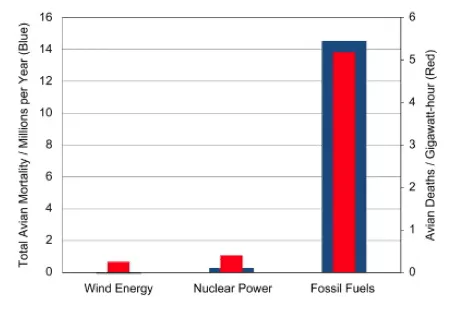

Los aerogeneradores no tienen la desventaja de causar más muertes de pájaros. Construir más aerogeneradores y sustituir centrales de otro tipo bajaría el número de muertes.
Entonces, esto no es una desventaja de la eólica.
Aunque haya cierta cantidad de pájaros que se muera por volar contra los molinos, es una situación mejor que si no hubiera molinos y se usara carbón o petróleo para conseguir energía.
Fuente y gráfico:
Gráfico de un estudio de 2009 en el que se calculan las muertes de aves por GWh en 2006. La conclusión es que las centrales de combustibles fósiles son un problema mucho mayor para las aves. DOI:
https://doi.org/10.1016/j.enpol.2009.02.011